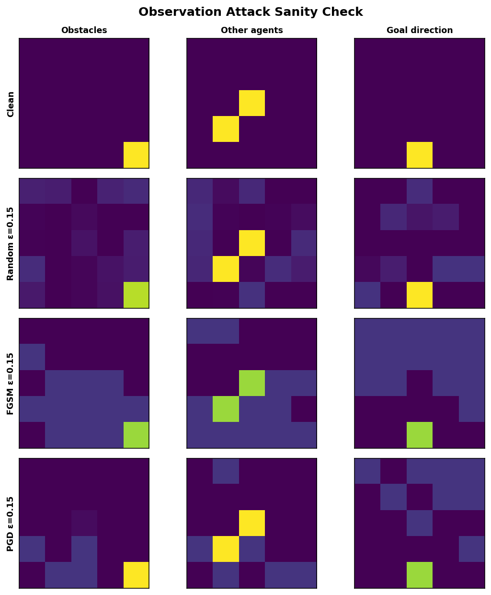
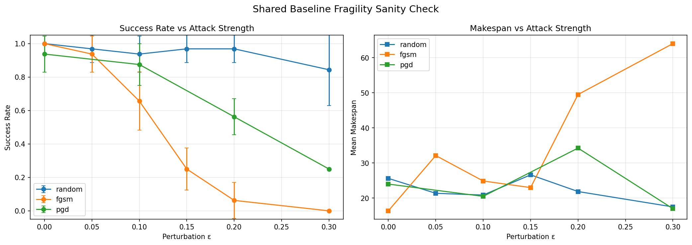
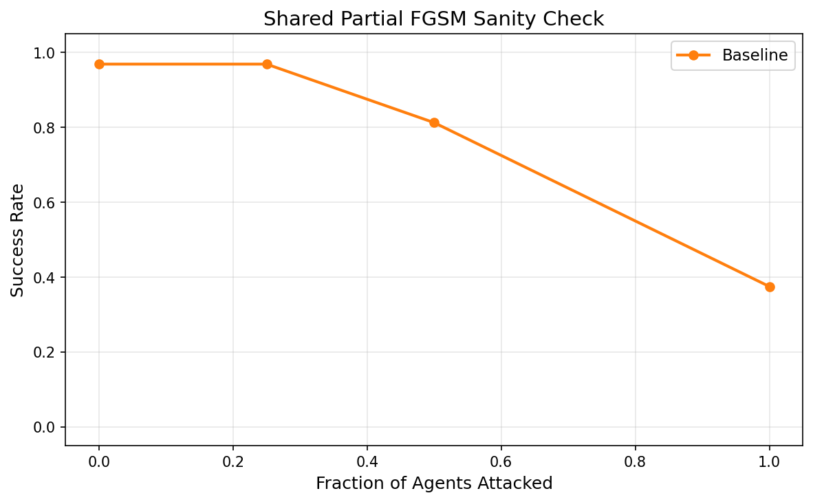
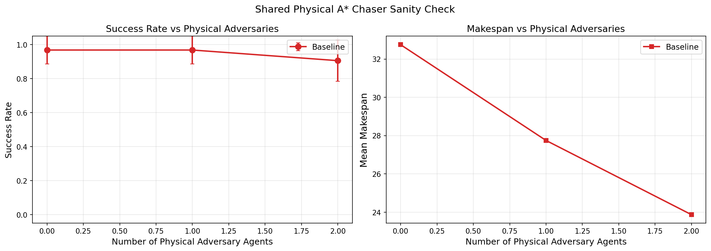
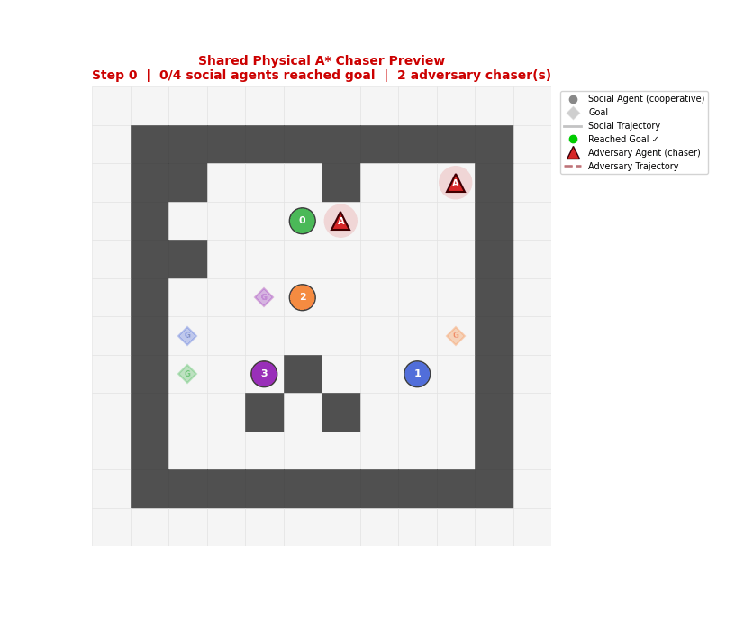

Generated at 2026-04-26 11:25:54 using grasp_splats.
Baseline + wrapper are ready for Riad, Akash, and Sujosh to build their own parts on top.
Baseline success: 96.5% over 50 held-out sanity episodes.
Baseline checkpoint: /home/carl_ma/Riad/MS/CS830/project/shared_baseline/models/phase2_smoke_baseline/best_policy.pt
| Attack | Max |delta| | Inside epsilon? | Inside [0, 1]? |
|---|---|---|---|
| random | 0.1479 | True | True |
| fgsm | 0.1500 | True | True |
| pgd | 0.1500 | True | True |
| partial_fgsm_50 | 0.1500 | True | True |





Raw JSON: shared_readiness_summary.json
Baseline/wrapper guide: BASELINE_WRAPPER_HANDOFF.md
Markdown handoff: SHARED_TEAM_HANDOFF.md
All three future tracks should build on this same baseline checkpoint, wrapper, and evaluation code.